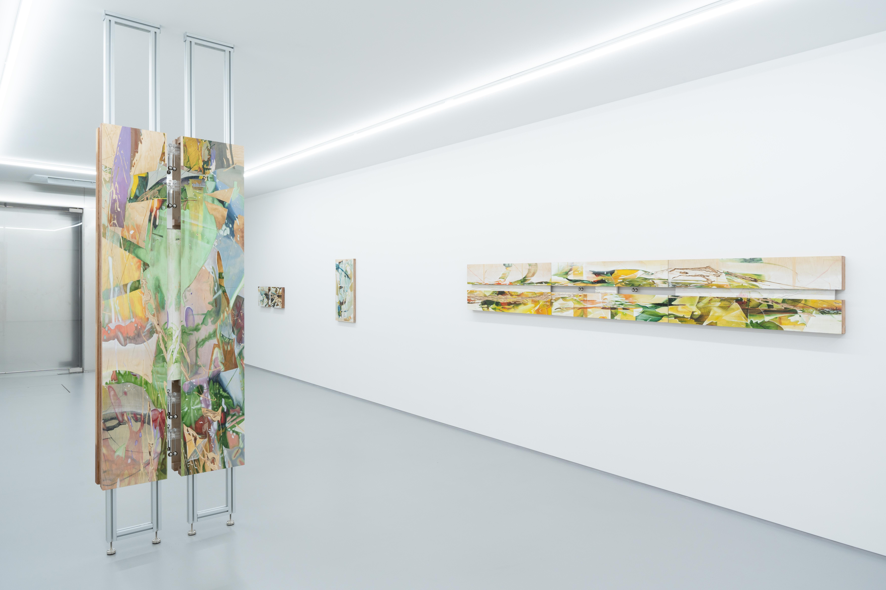
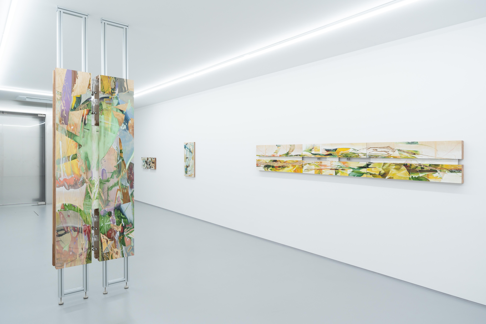

2023. 7. 8 ~ 2023. 8. 13
CYLINDER TWO, 24, Hangang-daero 48-gil, Yongsan-gu, Seoul, Korea
인간의 지각 이전에 회화 자체의 지각이 역으로 생기를 발생시킬 수 있다는 가설과 함께, 지속적으로 형성되는 지각의 순환구조에서 작용하는 회화 속 물질들의 압축된 세계를 탐구한다. 그의 회화를 담아 내는 화판은 단순히 안료가 안착되는 표면이 아닌 회화로부터 파생된 존재들이 거주하며 회화의 확장성을 이끌어내는 유기적인 육면체이자 소우주이다. 화판의 표면에 그려진 회화는 음각으로 생겨난 균열을 통해 2차원과 3차원의 경계 사이에 머무르고, 나무의 깎인 자국이 만든 계곡과 그 주변의 풍경들은 캐스팅을 통해 물과 하얀 가루의 화학반응으로 만들어진 고체의 표면으로 서서히 이동한다. 그리고 정지해 있는 회화 및 석고와 달리 화판 내부에 식립된 진자는 주기운동을 통해 서로가 맞닿으며 미세한 파동을 일으키는데, 이 청각적인 진동을 동반한 추의 위치변화는 시계의 초침처럼 정지해있는 대상에 시간성을 부여하고, 이는 다시 석고를 매질 삼아 회화의 표면으로 도달해 그 주위로 흐르는 시간에 대한 고찰을 이끈다.
Jonghwan Lee delves into the condensed world of painting materials that exist within the continuously forming cyclical structure of perception based on the hypothesis that the perception of painting itself can generate vitality even prior to human perception. The wood panel that encapsulates his paintings goes beyond being a mere surface for pigments to settle and takes the form of an organic hexahedron and a microcosm inhabited by entities that originate from the paintings and lead to their extension. Lee's paintings, portrayed on the panel, reside between the boundaries of two-dimensional and three-dimensional through cracks formed by engraving. The carved traces on wood that create valleys and the surrounding landscapes gradually transition into solid surfaces through casting, facilitated by chemical reactions between water and white powder. Furthermore, amidst the static nature of the paintings and plaster, a pendulum embedded within the panel undergoes periodic motion, colliding and creating waves. The pendulum’s positional shifts, accompanied by auditory vibrations, infuse a sense of temporality into the stationary subjects, akin to the movement of a clock's second hand. This, in turn, reaches the surface of the paintings using plaster as a medium, prompting contemplation on the passage of time.
 


사진 최산